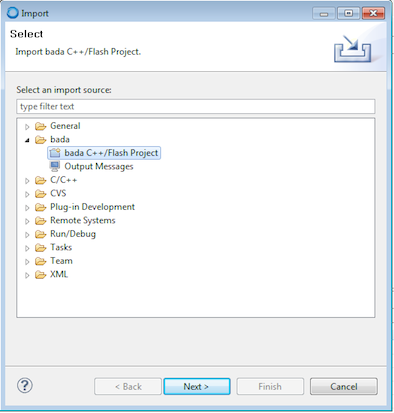
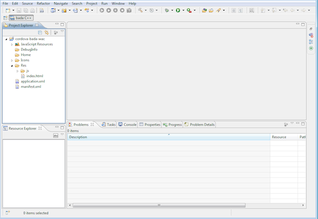
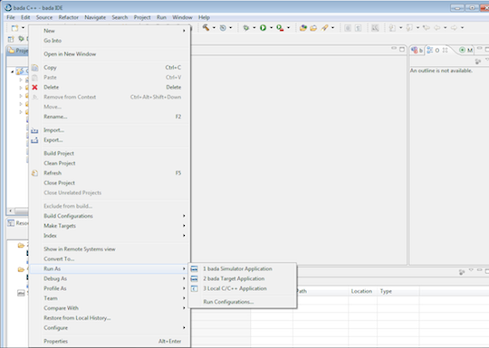
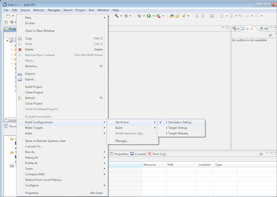

Getting Started with Bada
このガイドは、 Cordova のための開発環境セットアップ方法、またシンプルなアプリの動かし方を解説します。 Cordova は以前は PhoneGap と呼ばれていたため、いくつかのサイトは PhoneGap という名前をまだ使用しています。
1. 必要なもの
- Windows
- cordova-bada を使うためには、 bada 1.2 SDK が必要です (すでに Samsung のウェブサイトでは入手できません)
2. SDK と Cordova のインストール
3. 新規プロジェクトの作成
-
Bada IDE で、 File -> Import project -> Bada C++ / Flash Project を選択します
- 注意: Bada 1.2 では "Bada Application Project" を選択します

"Select root directory" がチェックされていることを確認し、 Browse ボタンをクリックします
-
Cordova bada プロジェクトフォルダー (1.2にはbadaフォルダー、2.xにはbada-wacフォルダー) を選択します "Copy projects into workspace" がチェックされていることを確認します
-
"Finish" をクリックします

4. Hello World の作成
Bada 2.x: HTML/CSS/Javascript のコードは Res/ フォルダー直下にあります。 以下の2行が index.html の
に含まれていることを確認します。 <link href="osp://webapp/css/style.css" rel="stylesheet" type="text/css" />
<script type="text/javascript" src="osp://webapp/js/webapp_core.js"></script>
Bada 1.2: HTML/CSS/Javascript のコードは Res/ フォルダー直下にあります。 以下の行が index.html に含まれていることを確認します。
<script type="text/javascript" src="cordova/cordova.js"> </script>
5A. シミュレーターへのデプロイ
-
Bada 2.x: プロジェクトで右クリックをし、 Run As -> bada Emulator Web Application を選択します

-
Bada 1.2: プロジェクトで右クリックをし、 Build configurations -&g; Set Active -> Simulator-Debugを選択します

プロジェクトで右クリックをし、 Run As -> bada Simulator Application を選択します。 アプリを更新するたびに、エミュレーターを閉じる必要があります。
5B. デバイスへのデプロイ
- デバイスが適切に設定されていることを確認します
Bada 2.x: プロジェクトで右クリックをし、 Run As -> bada Target Web Application を選択します
Bada 1.2: - プロジェクトで右クリックをし、 Build configurations -&g; Set Active -> Target-Debugを選択します - プロジェクトで右クリックをし、 Run As -> bada Target Application を選択します アプリを更新するたびに、エミュレーターを閉じる必要があります。